SVN服务器的搭建
- 一.前提准备
1.如果是在mac上面进行演示,需要在MAC上安装windows虚拟机 2.软件:visual SVN Server,windows软件,一般安装最新版的
- 二.开始安装
1.将软件放到MAC的桌面,并让虚拟机共享桌面的内容 2.在虚拟机中双击软件 3.遵守协议,点击next
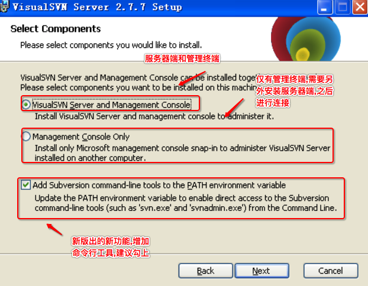4.选择需要安装的组件,点击next5.选择版本为标准版本(点击standard Edition)
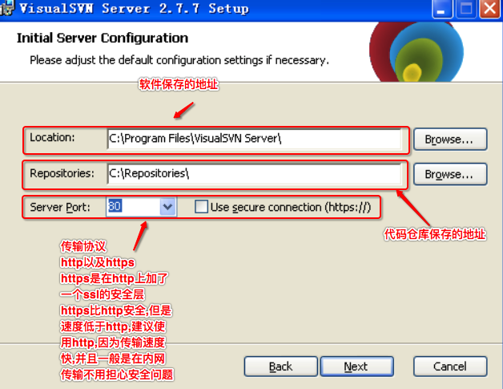6.设置软件安装地址,代码仓库地址,以及传输协议
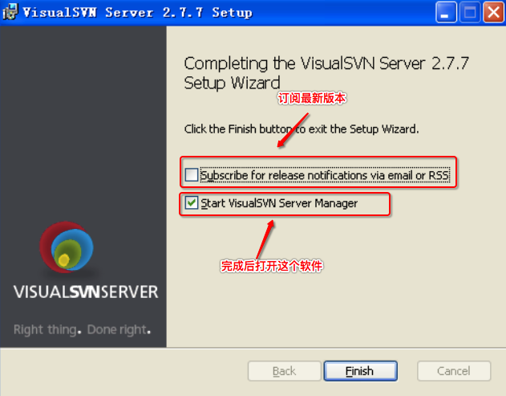7.安装成功后,选择点击finish后打开该应用程序8.打开后的界面
二.演示添加代码仓库
1.比如开发一款微信软件,那么需要一个微信的代码仓库 2.右键Repositories,单击选中Create New Repository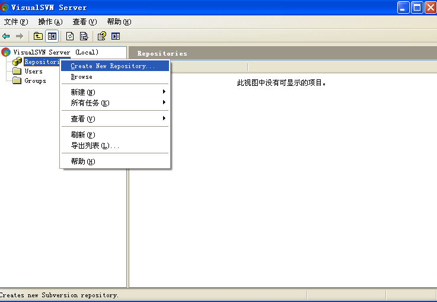
3.填写项目名称,点击next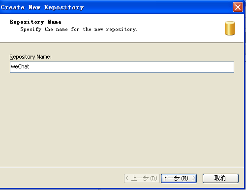
4.新人学习先选择创建一个空的代码仓库,点击next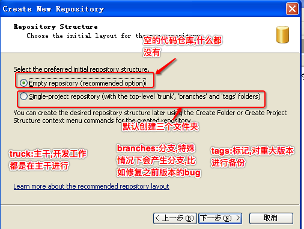
5.配置访问权限,选择没有人可以访问,点击Create
6.创建成功后的显示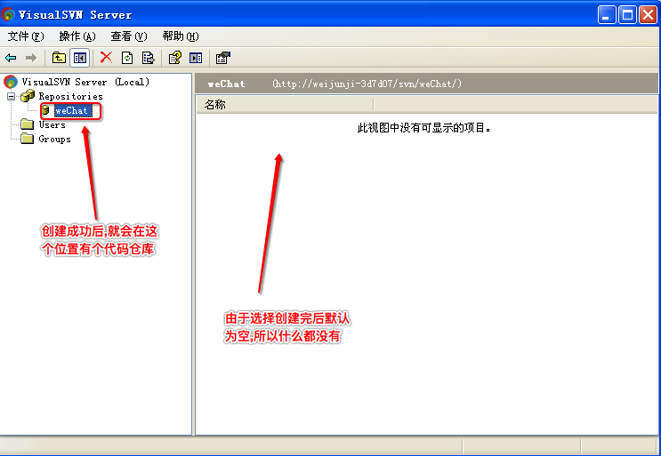
7.一般情况下,代码仓库里面不是什么都没有的,创建文件夹 1.右键weChat,选择新建,单击folder
2.创建一个code文件夹(用于存放代码)再创建一个doc文件(用于存放文档信息)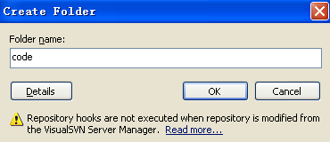
3.创建成功后在代码仓库中就能看到这两个文件夹
8.刚在创建代码仓库时设置没有人可以访问,需要设置人员进行访问,右键User,单击Create User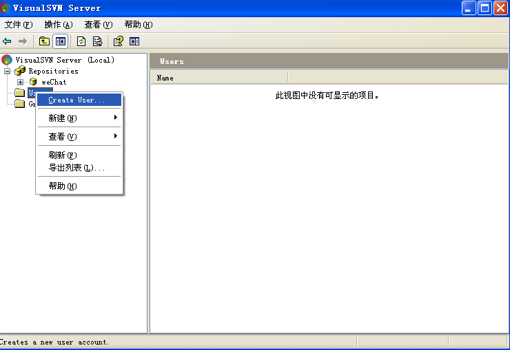
9.填入用户名和密码,之后点击OK,添加经理,张三,李四三个用户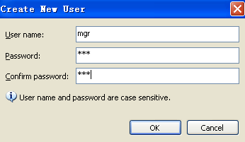
10.创建完之后,来到Users,可以查看当前所有用户
11.设置经理,张三,李四可以访问微信代码仓库 1.右键weChat,单击Properties
2.点击Add,用户添加用户或者组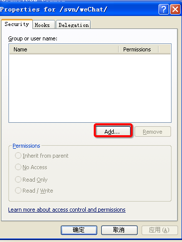
3.点击张三,李四,经理点击ok,并且这里也可以点击Create user来创建用户,步骤与上述创建步骤一致
4.设置所有用户可读也可写,之后点击确定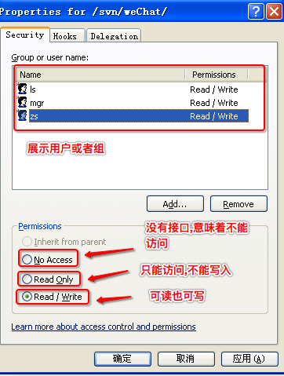
12.刚刚演示的是创建用户,下面来演示创建组,如果一个项目是多人开发,那么将开发此项目的所有的人员都加入到一个组中,那么更利于管理 1.右键Groups,点击选择Create Group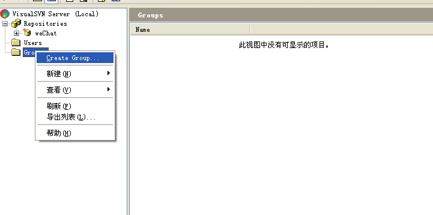
2.单击add,将所有成员添加到Members中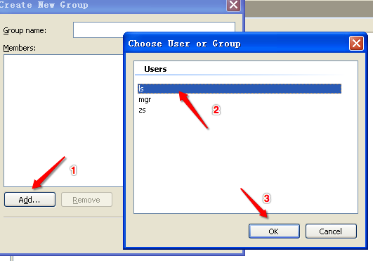
3.输入组名为weChat,点击OK,这样就将张三李四经理添加到了微信组
4.如果某一个微信项目做完了,这个时候需要开发陌陌项目,那么可以创建一个陌陌项目,让微信组的所有成员来开发陌陌,只需要,设置所有微信组的成员来访问陌陌(创建一个空的momo项目并任何人都不能访问),右键momo项目,选择properties,点击add,选中Groups下面的weChat,点击OK
5.选择weChat组,并选中read/write,之后点击确定,这样wechat组的所有成员都可以访问momo了(演示完后,momo不需要右键直接删除)
12.目前代码仓库创建好了,也创建用户可以访问代码仓库,下面来测试下如何进行访问,右键weChat,选择Copy URL to Clipboard(复制到剪贴板中)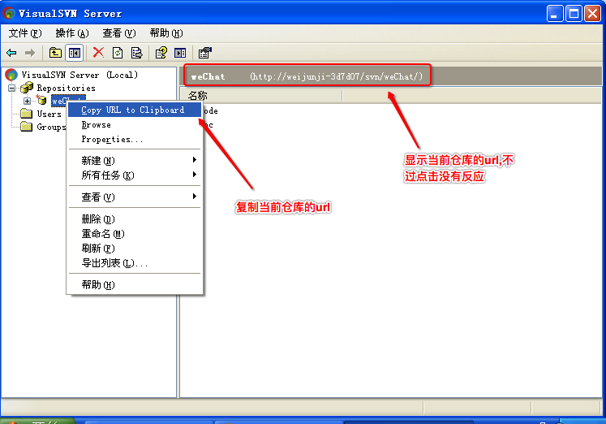
13.先尝试在虚拟机的IE浏览器中进行访问,访问后弹出一个弹框,这里需要输入帐号和密码(因为该仓库不是谁都能访问的),输入经理的用户名和密码点击确定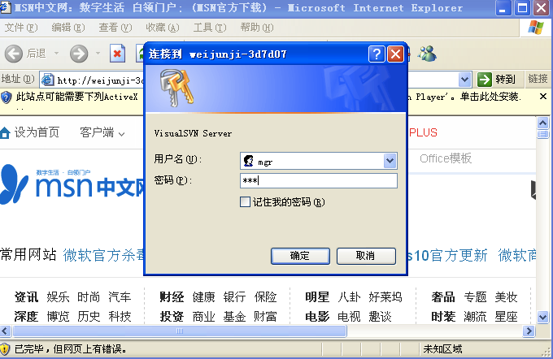
14.访问成功后可以在浏览器中看到当前代码仓库中有哪些东西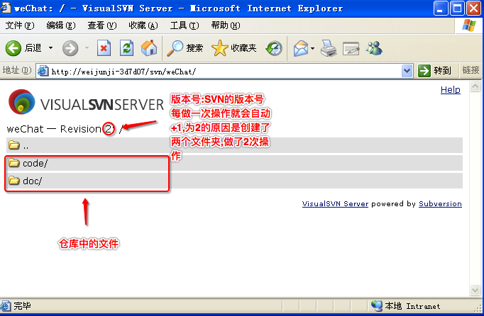
15.需求为在MAC电脑上访问虚拟机的代码仓库,尝试在MAC电脑上访问此URL,发现无法访问(因为访问的为主机名,在虚拟机,IE知道我的主机名,而MAC中不知道这是什么东西,所以无法访问)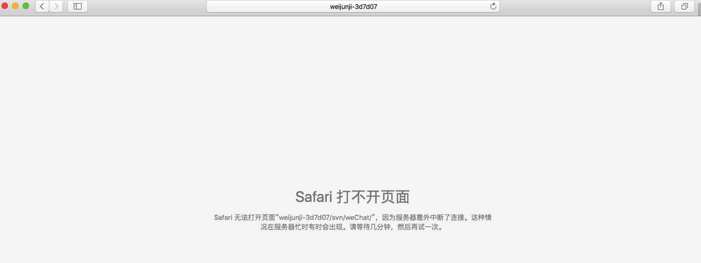
16.将主机名换为Windows的ip地址就可以进行访问了 1.通过点击开始->运行->输入cmd打开终端,输入ipconfig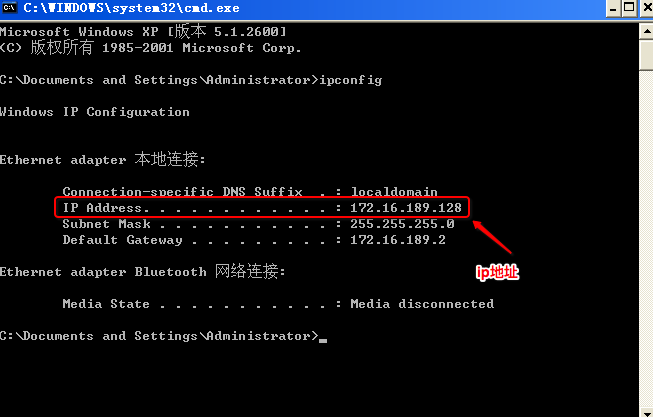
2.将主机名换成ip地址,在MAC的Safari上进行访问,弹框需要输入帐号密码,说明可以进行访问,输入经理的帐号和密码,点击登录
3.登录成功之后,可以在此看到,服务器的代码仓库里都有些什么东西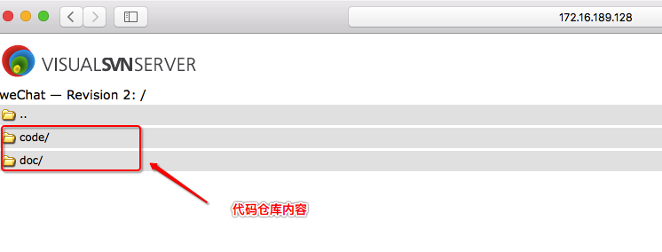
17.总结: 1.安装visual SVN Server软件 2.创建代码仓库 3.创建用户,设置用户权限 4.创建组,设置组的权限 5.MAC电脑访问虚拟机的SVN服务器中的代码仓库